research-project-page
Tier 2 · three.jsPaper / project landing: interactive 3D point-cloud teaser, before/after slider, method figure, results tables, copy-able BibTeX.
No time to design it. Too proud to ship it ugly.
Self-contained specs and live demos for the page genres researchers actually build — project pages, experiment dashboards, eval interfaces, posters, plus a set of static dashboard & research-page specs for when you don't need motion.
Real interactive 3D, live charts, and scroll-driven figures — reached for only when they serve comprehension, never as decoration. License-clean, single-file, no build step.
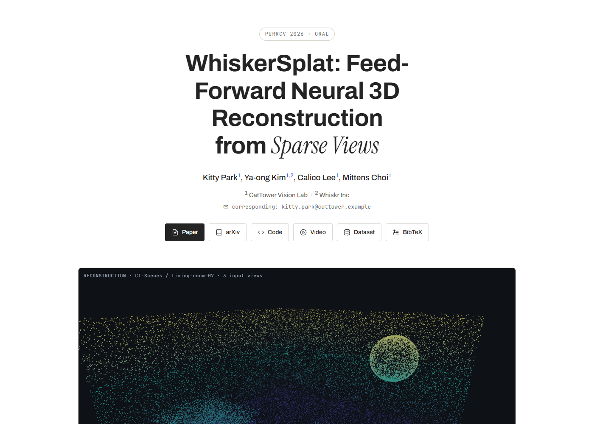
Drag a real 3D reconstruction, scrub a before/after slider — the teaser is the result, not a screenshot.
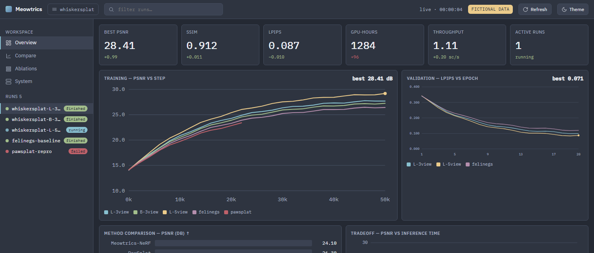
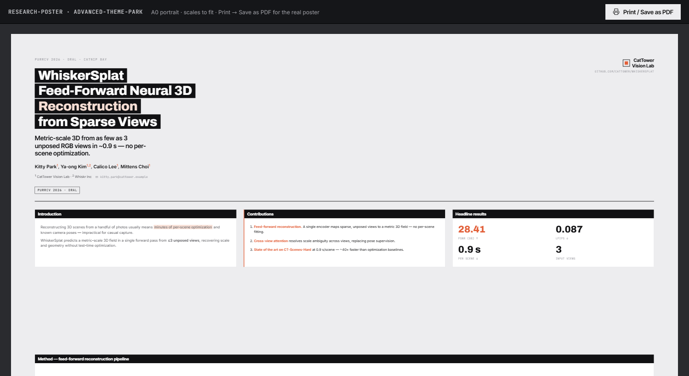
Charts draw in, metrics count up, figures reveal on scroll — motion that tracks the work.
Paper / project landings and scroll-driven data stories. The interactive archetype shares one fictional computer-vision project (WhiskerSplat) so the demos read as one body of work.
Paper / project landing: interactive 3D point-cloud teaser, before/after slider, method figure, results tables, copy-able BibTeX.
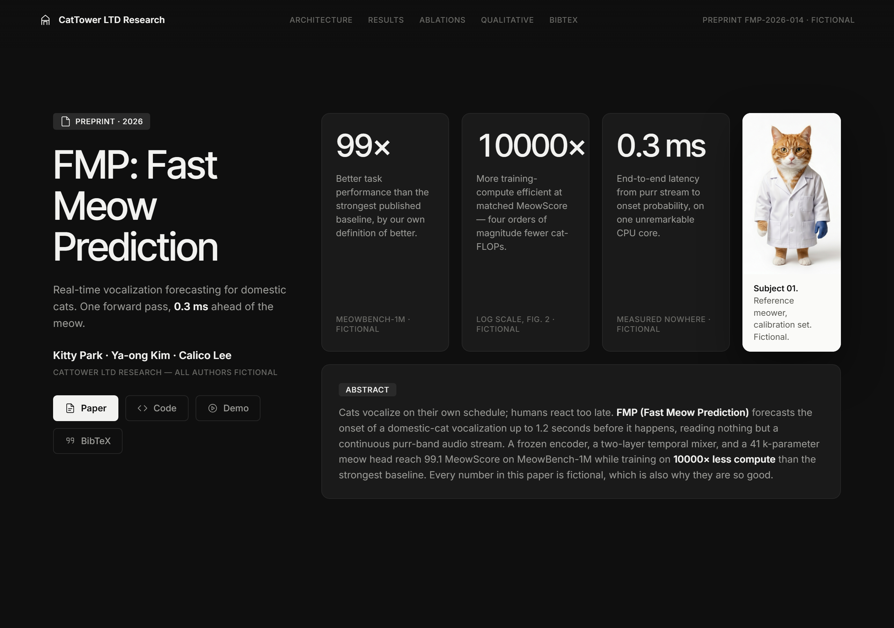
Research/paper landing on near-black — a sticky title column beside bright figure cards, editorial scroll pacing.
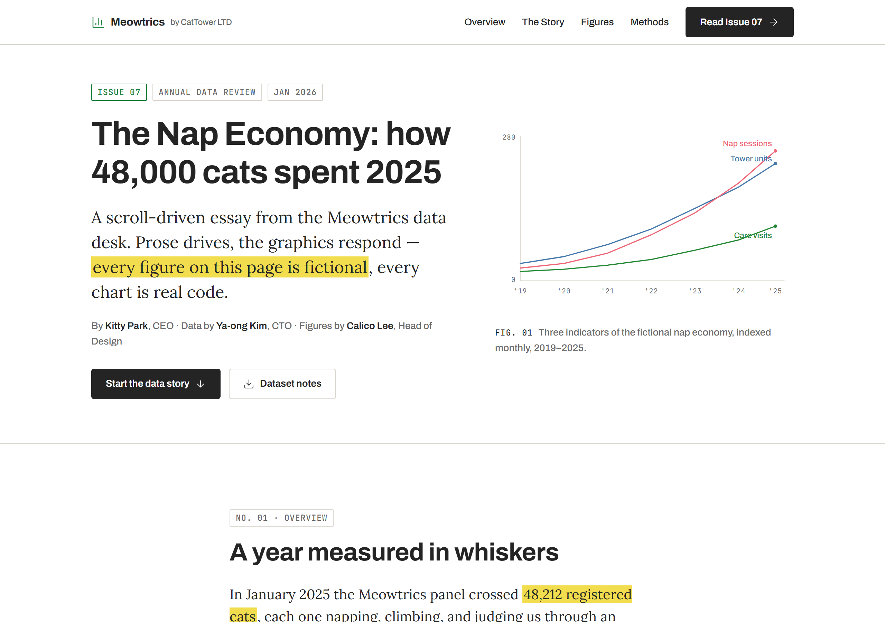
Scroll-driven data essay — serif editorial voice, charts that build as you read, light reading surface.
Metrics, ablations, run comparison and monitoring UIs. Every chart datapoint is
traceable to its source log line — hover a point and the tooltip shows the exact file:line it came from.
The interactive board is Tier 1; the rest are static specs adopted from the theme-park.md vocabulary for the same surfaces without motion.
ML experiment board: multi-run training curves, validation metrics, comparison bars, PSNR-vs-latency scatter, sortable runs table. Hover any point for its source log line.
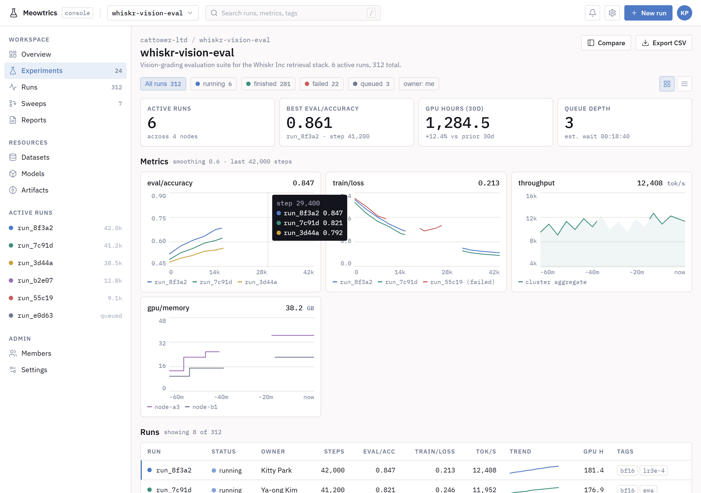
Light engineering console — dense run tables, live metrics, sparklines; each row traceable to its run log.
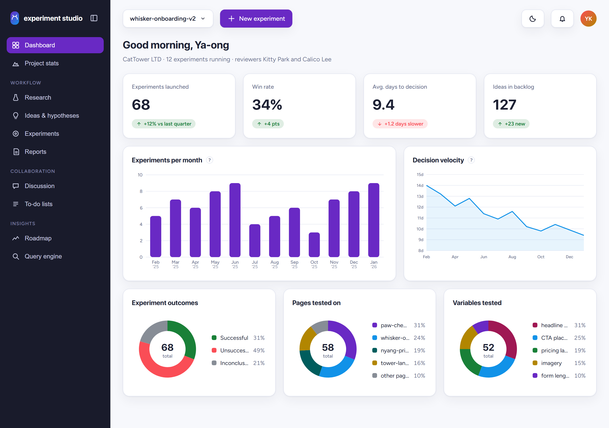

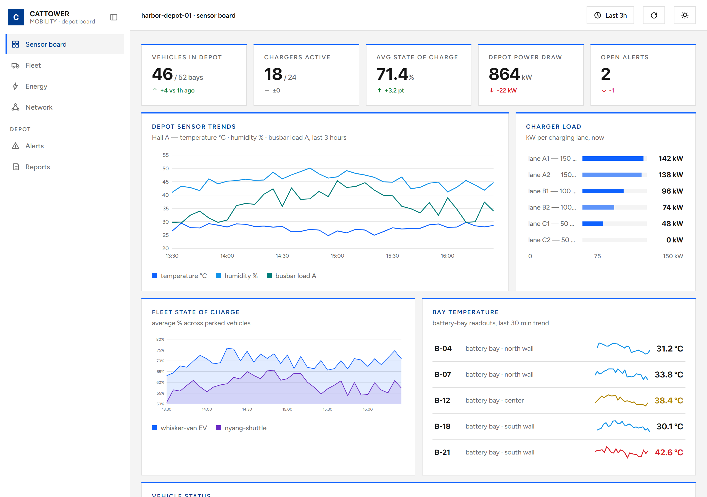
Square-corner corporate sensor board — deep marine blue, hairline panels, tabular readouts.


A keyboard-first human-verification interface and a fixed-aspect poster that renders on screen and prints to a real PDF — two surfaces every lab eventually needs.
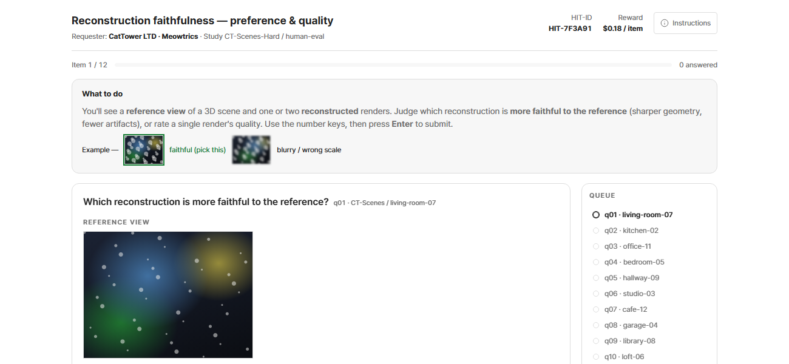
MTurk-style annotation tool: A/B preference and Likert quality, worked instructions, keyboard-first flow, attention checks, completion summary.
Conference poster on a fixed A0 canvas that scales to fit on screen and prints to a real PDF — columns, panels, figures, QR footer.
Pure technique demos that show the ethos in the abstract. Borrow their moves inside any archetype.
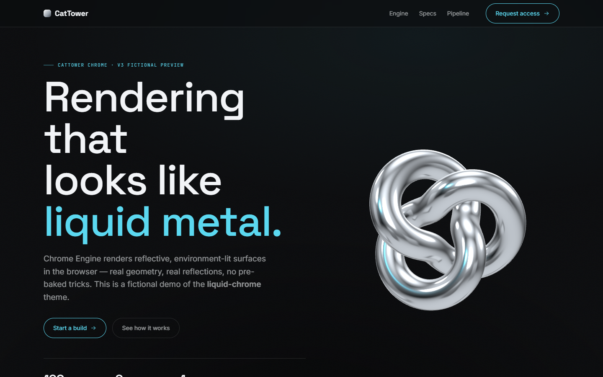
Near-black premium canvas with a real procedural chrome torus-knot lit by a generated environment.
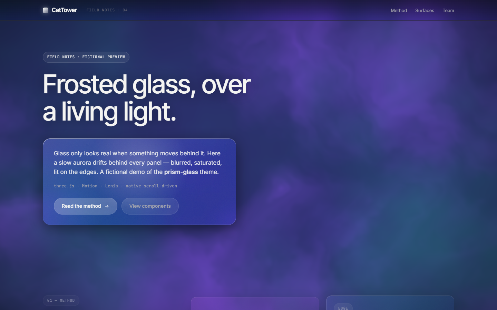
Frosted-glass panels floating over a living fbm-aurora shader — glass that reads as real glass.
Every spec declares the highest tier it uses, and reaches up only when motion or 3D is core to the task — a dashboard's character is its data; a poster must print.
Native CSS scroll-driven animations, View Transitions, WAAPI. Zero dependencies, compositor-smooth.
reveals · transitions · print
Motion (default) or GSAP when needed. Count-ups, chart draw-in, springs, scroll-pinned sequences.
one motion lib per demo
three.js, model-viewer, OGL. Genuine 3D objects, materials, shader fields — always with a static fallback.
WebGL + fallback